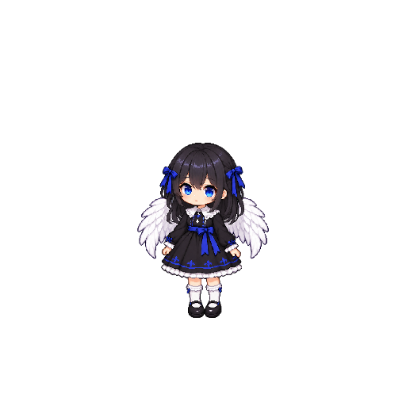

O visual aprovado ganhou um laço azul em cada lado do cabelo. Confira as animações e a nova proposta de auréola.
Carregando a proposta…
A proposta da Alice tem dois aros de luz translúcida e quatro pequenos losangos. A auréola é independente do corpo e pode mudar de cor. Quando aprovada, essa forma acompanhará a personagem na versão adulta.
Sem armas. As duas asas são brancas; os laços azuis aparecem nos dois lados do cabelo. A Yuuki aprovada está guardada com uma cópia de segurança.
